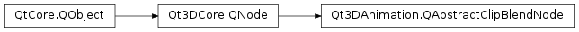

Qt3DAnimation.QAbstractClipBlendNode¶
Inherited by: Qt3DAnimation.QLerpClipBlend, Qt3DAnimation.QAdditiveClipBlend
Detailed Description¶
QAbstractClipBlendNodeis the base class for types used to construct animation blend trees.Animation blend trees are used with a
QBlendedClipAnimatorto dynamically blend a set of animation clips together. The way in which the blending of animation clips is performed is controlled by the structure of the blend tree and the properties on the nodes it contains.The leaf nodes in a blend tree are containers for the input animation clips. These clips can be baked clips read from file via
QAnimationClipLoader, or they can be clips that you build within your application with QAnimatitonClip andQAnimationClipData. To include a clip in your blend tree, wrap it in aQClipBlendValuenode.The interior nodes of a blend tree represent blending operations that will be applied to their arguments which hold the input clips or even entire sub-trees of other blend tree nodes.
At present, the Qt 3D Animation module provides the following blend tree node types:
Qt3DAnimation.QClipBlendValueQt3DAnimation.QLerpClipBlendQt3DAnimation.QAdditiveClipBlendAdditional node types representing other blending operations will be added in the future.
See also
-
class
PySide2.Qt3DAnimation.Qt3DAnimation.QAbstractClipBlendNode([parent=nullptr])¶ Parameters: parent – PySide2.Qt3DCore.Qt3DCore::QNode
© 2018 The Qt Company Ltd. Documentation contributions included herein are the copyrights of their respective owners. The documentation provided herein is licensed under the terms of the GNU Free Documentation License version 1.3 as published by the Free Software Foundation. Qt and respective logos are trademarks of The Qt Company Ltd. in Finland and/or other countries worldwide. All other trademarks are property of their respective owners.